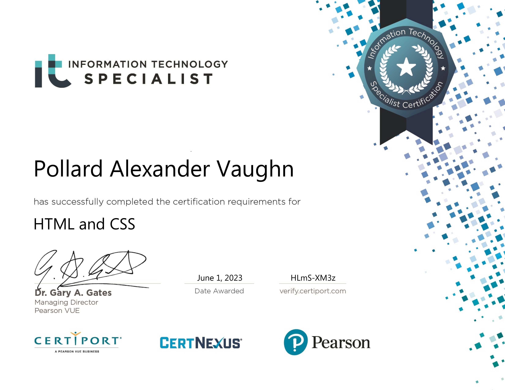

About Me
I am a graduate of Tri-County Regional Vocational Technical High School (Class of 2026), where I studied Computer Information Systems (CIS). I have strong professional interests in web development, artificial intelligence, IT Support, and game design. During my time there, I worked as an IT Assistant Intern at Salmon Health, supporting enterprise networking systems and assisting residents with their devices. This role provided me with extensive hands-on experience in technical support, face-to-face customer service, and professional workplace etiquette.
My Skills
Certifications

IT Specialist - Cybersecurity
Skills Acquired:
Computer Hardware Basics
Skills Acquired:

IT Specialist - HTML and CSS
Skills Acquired:
IT Specialist - Device Configuration and Management
Skills Acquired:
CS 121 - OSHA 10-Hour General Industry
Skills Acquired:
Experiences and Milestones
IT Assistant
IT Assistant Intern at Salmon Health, where I support networking systems and assist residents with their devices, gaining hands-on experience in technical support, face-to-face customer service, and professional workplace etiquette.
Actor
A small professional stage production for young actors.